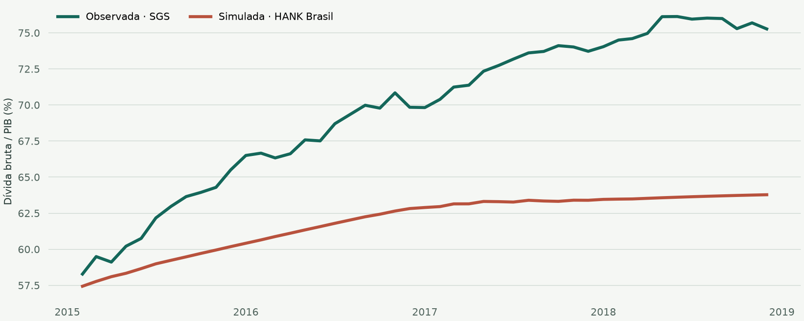

HANK Brasil
Um modelo computacional para investigar como distribuição de renda, juros e política fiscal se relacionam com a economia brasileira.
Uma família média ou muitas famílias?
Um modelo econômico é uma simplificação: ele escolhe quais diferenças entre pessoas e quais relações da economia serão representadas. Essa escolha muda as perguntas que ele consegue responder.
O ponto de partida
RANK · agente representativoUm modelo novo-keynesiano com uma família representativa resume as decisões das famílias como se fossem as de uma só família típica.
HANK · agentes heterogêneosUm modelo novo-keynesiano com famílias diferentes considera, por exemplo, diferenças de renda, patrimônio e acesso a crédito.
Quando chega uma renda extra
O risco da médiaO modelo pode representar bem uma resposta agregada, mas não mostra diretamente quem recebeu a renda nem como cada grupo reagiu.
O que a distribuição permite verFamílias com pouca reserva podem gastar uma parcela maior da renda adicional; outras podem poupar mais. A resposta agregada depende de quem recebe.
O cuidado necessário
Simplicidade tem valorRANK é útil para estudar mecanismos agregados. A hipótese representativa, porém, pode esconder diferenças importantes em análises distributivas.
Mais detalhe não é provaHANK pode ser mais adequado para essas perguntas, mas exige dados e hipóteses adicionais. Não é automaticamente mais preciso nem demonstra um resultado por construção.
Um exemplo simplificado: imagine duas famílias que recebem R$ 100 a mais. Uma gasta R$ 90 e outra R$ 20. A média esconde que o impacto inicial sobre o consumo depende de quem recebeu a renda. Os números são apenas ilustrativos, não uma estimativa do Brasil.
RANK e HANK são famílias de modelos, não rótulos para todas as posições econômicas. Modelos convencionais também podem incluir impostos que variam com a atividade e diferentes hipóteses fiscais; HANK não é, por si só, uma política heterodoxa. Referência: Kaplan, Moll e Violante, Monetary Policy According to HANK.
Como os efeitos podem se propagar
Este mapa causal simplificado, ou DAG, mostra caminhos que queremos testar. As setas indicam possíveis influências, não garantem que o efeito seja positivo ou grande. Cada caminho representa uma sequência no tempo; a economia também tem retroalimentações entre períodos.
RANK · um caminho agregado simplificado
- Política pública
- Renda da família representativa
- Consumo agregado
- Atividade e PIB
- Arrecadação
- Resultado primário e dívida / PIB
Neste exemplo, a reação é resumida por uma família típica. O ponto cego possível é não distinguir os efeitos sobre grupos que recebem ou gastam de formas diferentes. A arrecadação endógena também pode existir em modelos RANK.
HANK · renda na base e atividade
- Transferência à base
- Renda disponível
- Consumo
- Atividade e PIB
- Arrecadação
- Resultado primário e dívida / PIB
Mais renda pode estimular o consumo e a atividade, elevando a arrecadação. A força desse caminho depende de preços, capacidade produtiva, importações e de quem recebe a renda.
O custo direto também conta
- Transferência à base
- Despesa pública primária
- Resultado primário
- Dívida / PIB
O gasto também aumenta a despesa pública. A receita adicional e o crescimento do PIB podem compensar parte desse custo, mas o saldo não é garantido.
Juros e dívida
- Taxa Selic
- Custo dos títulos públicos
- Juros pagos pelo governo
- Dívida / PIB
Uma mudança de juros pode alterar o serviço da dívida, com velocidades diferentes conforme os títulos. A dívida / PIB também depende do crescimento, da inflação e do resultado primário.
Câmbio e preços
- Taxa Selic
- Fluxos financeiros e câmbio
- Preços de bens importados
- Inflação e atividade
O câmbio responde também ao cenário externo e às expectativas. Reservas podem ajudar a lidar com volatilidade, mas não eliminam o risco cambial.
Os caminhos são hipóteses de pesquisa, não conclusões causais. O protótipo ainda não fecha integralmente os fluxos entre os setores e não foi calibrado com microdados brasileiros.
O que os dados mostram
O primeiro mês fixa as condições iniciais. A comparação cobre os 47 meses seguintes, de fevereiro de 2015 a dezembro de 2018.

A principal conclusão é um limite do modelo. Nesta configuração, ele subestimou a dívida observada em dezembro de 2018. O erro médio absoluto nos 47 meses foi de 7,76 pontos percentuais; investigar suas causas vem antes de tirar conclusões sobre políticas.
Outra janela, outro sinal. Em dezembro de 2025, a dívida simulada foi de 83,05% do PIB, contra 78,64% observados. Ambas as comparações são condicionais à trajetória realizada da Selic, não testes de previsão fora da amostra.
O que foi feito
O exercício inicializa o modelo com séries históricas do SGS para Selic, IPCA, dívida bruta, reservas internacionais e câmbio. A população é sintética e heterogênea, distribuída em dez grupos de renda.
A simulação de referência usa 100 mil agentes e a Selic efetivamente observada nos meses seguintes. Gastos, tributação adicional e uso de reservas não recebem choques nesse exercício.
O que ainda não sabemos
- A trajetória usa Selic futura realizada e dados sujeitos a revisões: não é uma previsão fora da amostra em tempo real.
- A inflação anualizada instantânea do modelo não é idêntica ao IPCA acumulado em 12 meses.
- A auditoria encontrou ajustes artificiais na riqueza e fluxos sem contrapartida explícita. O modelo ainda não demonstra consistência fluxo-estoque.
- As elasticidades e a distribuição dos agentes não foram estimadas com microdados brasileiros.
- O exercício não estabelece causalidade nem demonstra superioridade sobre o Focus ou outros modelos.
Próximos passos
- Auditar as contas.
Examinar fluxos, balanços e os fatores associados ao erro da dívida. - Calibrar com dados reais.
Integrar microdados do IBGE e explicitar incertezas e hipóteses. - Testar previsões.
Comparar fora da amostra com o Focus e referências simples, em horizontes equivalentes.